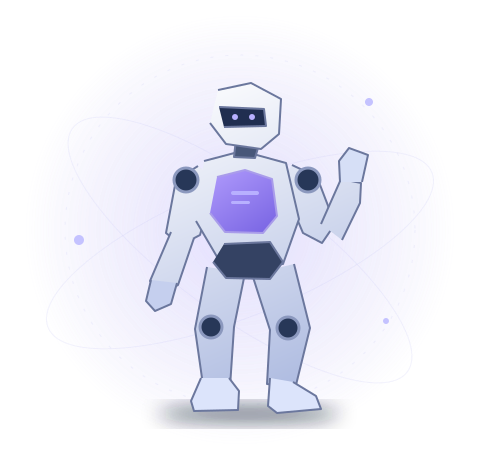

↻
Preview your motion
Upload a K1 motion CSV, see it on the robot in 3D, and choose an approved reference.
Bring humanoid motion to life. Preview a reference, train your own tracking policy, and explore what your robot learns—all from your browser.
Private workshop · Access provided by your organizer

No laptop training environment to install.
No server to pick.
Just a motion and a question.
Upload a K1 motion CSV, see it on the robot in 3D, and choose an approved reference.
Pick your training size and iterations. The queue assigns available GPU capacity automatically.
Watch progress and TensorBoard, then download your checkpoint and the exact run source.
Approved participants sign in directly on the training server.